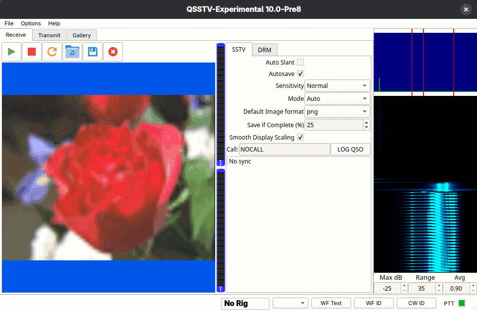
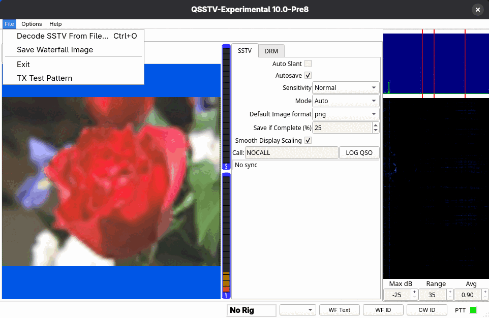
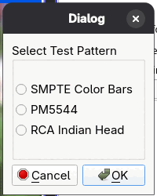
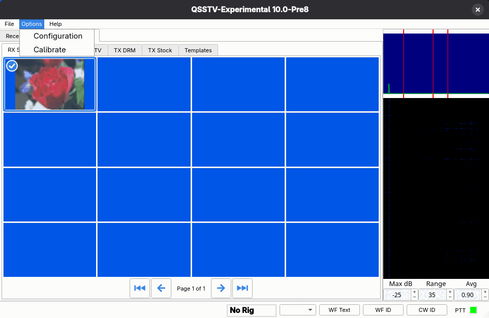
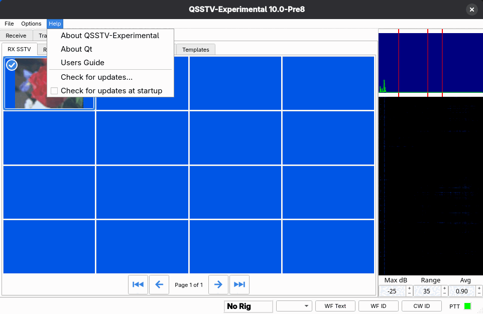

Main window tour

Layout
- Menu bar: File, Options and Help (see below).
- Main tabs: Receive, Transmit and Gallery.
- Toolbar: the start, stop and picture buttons of the current tab. Hover over a button to see what it does.
- Picture area: the picture being received or about to be transmitted.
- Settings panel: a small tab control with an SSTV tab and a DRM tab. Switching it switches the program between analog SSTV and digital DRM operation.
- Spectrum and waterfall: at the right. The top graph is the audio spectrum, the lower one a waterfall. Red vertical markers show the frequencies of interest for the current mode, and move when you switch between SSTV and DRM. The Max dB, Range and Avg boxes underneath adjust how the display is drawn.
- Level meters: the two vertical bars next to the picture area.
- Status bar: described below.
The mode switch
The SSTV and DRM tabs in the settings panel are shared between Receive and Transmit: choosing DRM on one tab chooses it on the other. While a picture is being received or transmitted, the other mode's tab is locked so a running transmission or reception is never interrupted. Stop the receiver or transmitter first if you want to change mode.
Status bar
The bottom row has, from left to right: a message area, the rig frequency, a frequency selector, three buttons and the PTT indicator.
- Rig frequency
- Shows the radio's frequency in MHz when CAT control is active, otherwise No Rig.
- Frequency selector
- A drop-down list of the frequencies you entered under Configuration > Frequencies. It lists the SSTV entries while the SSTV tab is active and the DRM entries while DRM is active. Choosing one tunes the rig and sets its mode (needs CAT).
- WF Text
- Opens a small dialog where you pick or type up to four texts (TX #1 to TX #4) and transmits the chosen one as text that appears in a waterfall display.
- WF ID
- Transmits your callsign as waterfall text.
- CW ID
- Transmits the CW identification set up on the CW page.
- PTT
- A small indicator: green when not transmitting, red while the transmitter is keyed.
Menus
File

- Decode SSTV From File...
- Ctrl+O. Decodes a recording; see Decode from file and command line.
- Save Waterfall Image
- Asks where to save the current waterfall as a JPG or PNG image. It tells you if there is no waterfall image yet or if saving fails.
- Exit
- Asks for confirmation (this can be turned off in Configuration > Gui), then stops everything and saves your settings.
- TX Test Pattern
- Puts a built-in test picture into the transmit tab. Choose between SMPTE Color Bars, PM5544 and RCA Indian Head. Useful for checking levels without needing a picture file.

Press Ctrl+F to switch the window to full screen and back.
Options

- Configuration
- Opens the Configuration dialog.
- Calibrate
- Opens the soundcard calibration dialog.
Debug builds and builds made with logging enabled add a few developer entries here; ordinary releases do not show them.
Help
